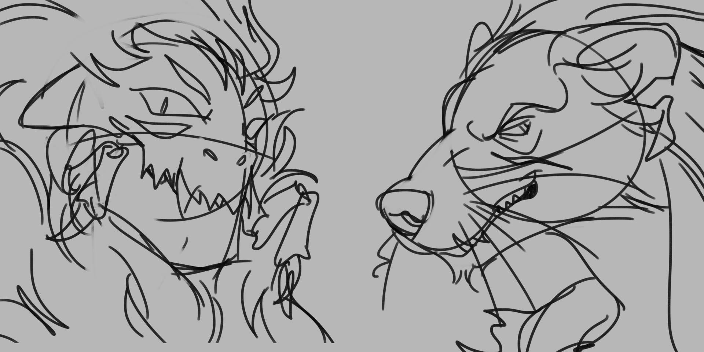
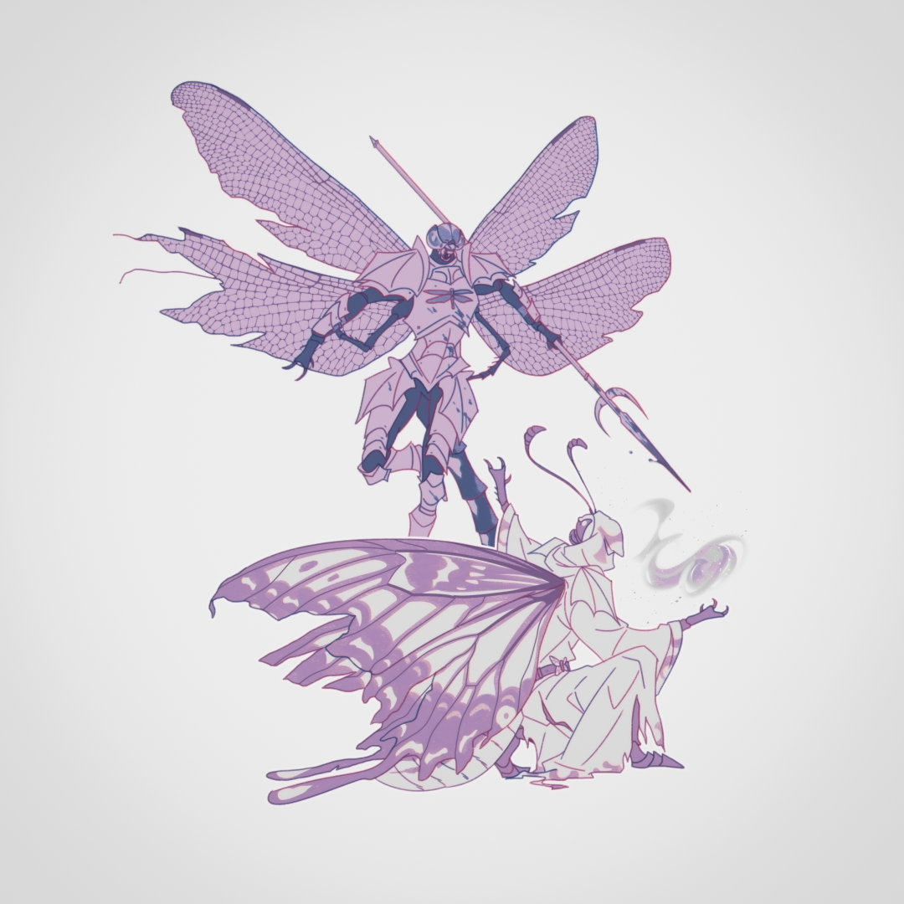
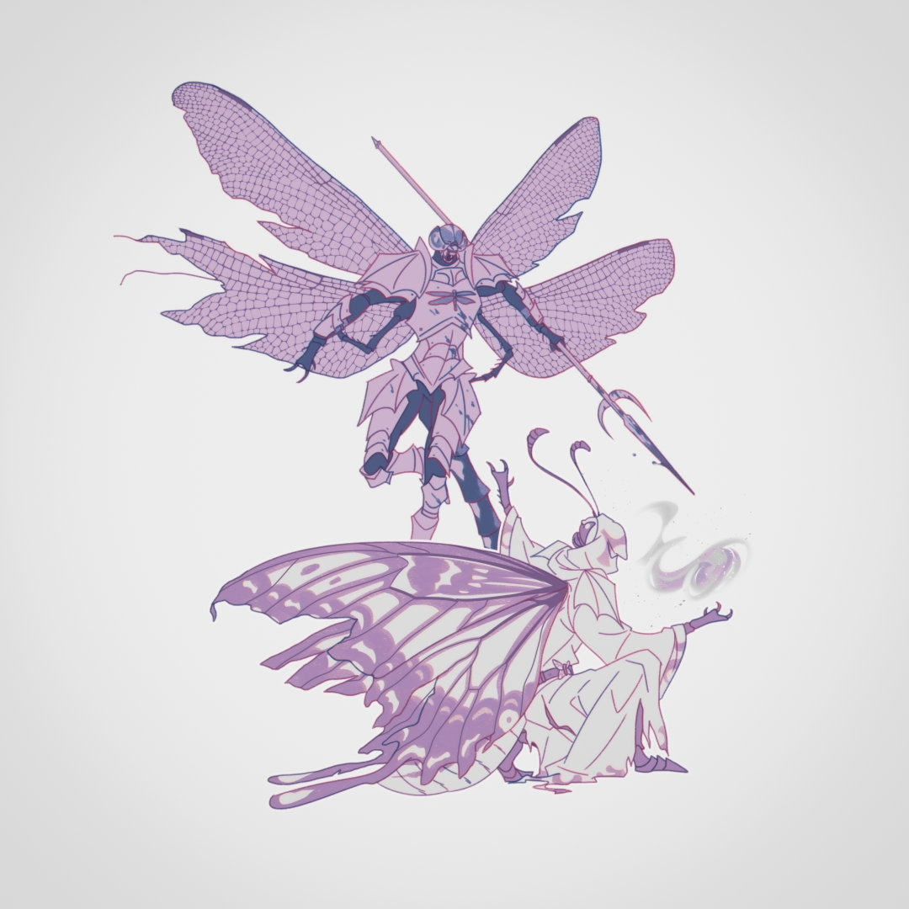

Personal Art
Below is a collection of original artwork, sketches, and fan art that I've posted to social media throughout 2023-2025. These are publically shared in order to connect with fellow creatives and potential clients for commissions, but I also enjoy the creation of these personal works in order to improve my skills!
All illustrations were created in Clip Studio Paint.

 
